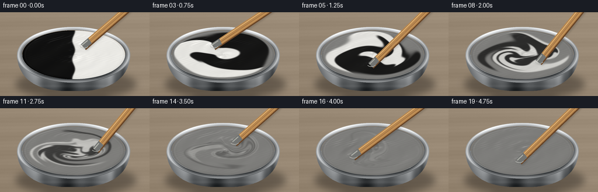
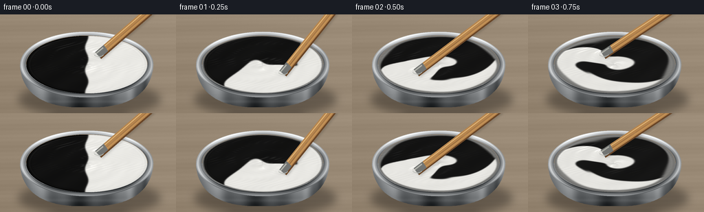

CODING AGENTS AS PIXEL WORLD MODELS
traex/GPT-6.1-Sol · material_0001
点击播放 · 原生 RGB 像素
逐轮保存的候选
回放视频、检查图与代码变化。
每份候选均可单独播放。实际图片检查记录在下方工具轨迹中。
候选 01播放与检查图
点击播放 · 原生 RGB 像素


展开代码变化
--- 上一保存版本
+++ 本次保存版本
@@ -0,0 +1,176 @@
+from pathlib import Path
+import json
+import numpy as np
+from PIL import Image, ImageDraw, ImageFilter
+import artifact_io
+
+ROOT = Path(__file__).resolve().parent
+SPEC = json.loads((ROOT / 'task_spec.json').read_text())
+W,H = SPEC['width'],SPEC['height']
+S=3
+WW,HH=W*S,H*S
+rng=np.random.default_rng(14)
+y,x=np.mgrid[0:HH,0:WW].astype(float)
+x/=S; y/=S
+
+# A real-time, back-traced scalar paint simulation, independent of rendering.
+N=420
+vv,uu=np.mgrid[-1:1:complex(N),-1:1:complex(N)]
+r=np.sqrt(uu*uu+vv*vv)
+field=1/(1+np.exp(np.clip(-(uu+.027*np.sin(8*vv))*160,-60,60)))
+inside=r<1
+
+def interp(a,px,py):
+ px=np.clip(px,0,N-1.001); py=np.clip(py,0,N-1.001)
+ ix=px.astype(int); iy=py.astype(int)
+ fx=px-ix; fy=py-iy
+ return (a[iy,ix]*(1-fx)*(1-fy)+a[iy,ix+1]*fx*(1-fy)+a[iy+1,ix]*(1-fx)*fy+a[iy+1,ix+1]*fx*fy)
+
+def advance(a,phase,frame):
+ for step in range(9):
+ t=phase+step*.20
+ # Differential rotation folds the two equally sized paint volumes.
+ omega=1.85+5.1*np.exp(-r*r/0.36)
+ vx=-vv*omega; vy=uu*omega
+ # Moving stirrer produces a localized stretching wake and secondary eddies.
+ tx=.48*np.cos(t); ty=.48*np.sin(t)
+ dx=uu-tx; dy=vv-ty
+ wake=np.exp(-(dx*dx+dy*dy)/.045)
+ vx+=-dy*11*wake; vy+=dx*11*wake
+ envelope=(1-np.minimum(r,1)**4)
+ vx+=.55*np.sin(5*vv+1.2*t)*envelope
+ vy+=.55*np.sin(5*uu-.9*t)*envelope
+ dt=.034
+ a=interp(a,(uu-vx*dt+1)*(N-1)/2,(vv-vy*dt+1)*(N-1)/2)
+ q=np.pad(a,1,mode='edge')
+ a=.72*a+.07*(q[1:-1,:-2]+q[1:-1,2:]+q[:-2,1:-1]+q[2:,1:-1])
+ # Micro-scale pigment dispersion becomes visible as the mixing progresses.
+ rate=.0015 if frame<6 else (.008 if frame<12 else .034)
+ a=.5+(a-.5)*(1-rate)
+ a=np.where(inside,a,.5)
+ return a
+
+# Warm, subdued workbench, with out-of-focus wood pores and grain.
+noise=rng.normal(0,1.0,(HH,WW))
+gr=2.5*np.sin(y*.22+.45*np.sin(x*.021))+1.1*np.sin(y*1.0+x*.014)
+base=np.zeros((HH,WW,3),float)
+for k,col in enumerate((151,135,115)):
+ base[:,:,k]=col+gr+noise*.45+(x-128)*.026-(y-72)*.04
+bg=Image.fromarray(np.clip(base,0,255).astype('uint8')).filter(ImageFilter.GaussianBlur(.6*S))
+# Diffuse cast shadow gives the container weight on the table.
+shadow=Image.new('RGBA',(WW,HH))
+d=ImageDraw.Draw(shadow)
+d.ellipse((27*S,100*S,233*S,147*S),fill=(28,24,20,106))
+shadow=shadow.filter(ImageFilter.GaussianBlur(6*S))
+bg=Image.alpha_composite(bg.convert('RGBA'),shadow).convert('RGB')
+# Steel bowl body: a curved wall with soft vertical environment reflections.
+bodymask=Image.new('L',(WW,HH)); bd=ImageDraw.Draw(bodymask)
+# dense sampled cubic Bezier curve
+
+def bez(p0,p1,p2,p3,n=80):
+ ts=np.linspace(0,1,n)
+ return [tuple((1-t)**3*np.array(p0)+3*(1-t)**2*t*np.array(p1)+3*(1-t)*t*t*np.array(p2)+t**3*np.array(p3)) for t in ts]
+pts=[(29,73)]+bez((29,73),(31,120),(71,138),(126,135))+bez((126,135),(180,138),(221,119),(223,73))+[(29,73)]
+bd.polygon([(int(a*S),int(b*S)) for a,b in pts],fill=255)
+body=np.zeros_like(base)
+reflection=(20*np.sin((x-34)*.057)+15*np.sin(x*.15)+26*np.exp(-((x-63)/9)**2)+43*np.exp(-((x-190)/7)**2)-35*np.exp(-((x-211)/5)**2))
+vertical=138-1.7*(y-85)+12*np.exp(-((y-127)/2.5)**2)
+for k,off in enumerate((3,6,8)):
+ body[:,:,k]=vertical+reflection+off
+bodyim=Image.fromarray(np.clip(body,0,255).astype('uint8'))
+bg.paste(bodyim,(0,0),bodymask)
+# Rolled metallic rim, correctly elliptical in the oblique camera.
+CX,CY=126.,73.
+rr=np.sqrt(((x-CX)/97)**2+((y-CY)/48)**2)
+inner=np.sqrt(((x-CX)/88.5)**2+((y-CY)/42.5)**2)
+rimmask=((rr<=1)&(inner>=1))
+rimangle=np.arctan2((y-CY)/48,(x-CX)/97)
+metal=155+55*np.cos(rimangle+1.7)+20*np.sin(5*rimangle)
+metal+=42*np.exp(-((rr-.973)/.013)**2)-56*np.exp(-((inner-1.005)/.024)**2)
+arr=np.array(bg).astype(float)
+for k,off in enumerate((0,3,5)):
+ arr[:,:,k]=np.where(rimmask,np.clip(metal+off,0,255),arr[:,:,k])
+bg=Image.fromarray(arr.astype('uint8'))
+
+# Surface projected into the open bowl.
+u=(x-CX)/88; v=(y-CY)/42
+rad=np.sqrt(u*u+v*v); ang=np.arctan2(v,u)
+paintmask=rad<1
+px=(u+1)*(N-1)/2; py=(v+1)*(N-1)/2
+
+def draw_stick(im,phase):
+ # The working end circles rapidly while the shaft comes from an unseen hand.
+ tip=np.array([CX+39*np.cos(phase),CY+17*np.sin(phase)])
+ top=np.array([233+7*np.cos(phase+.4),-20+5*np.sin(phase)])
+ vec=(top-tip); length=np.linalg.norm(vec); axis=vec/length
+ normal=np.array([-axis[1],axis[0]])
+ width=10.8
+ # Raised wood face and narrow dark side, with a rounded, paint-covered end.
+ low=tip-axis*2
+ corners=[low-normal*width/2,low+normal*width/2,top+normal*width/2,top-normal*width/2]
+ layer=Image.new('RGBA',im.size); dd=ImageDraw.Draw(layer)
+ sh=[(float(p[0]+3)*S,float(p[1]+3)*S) for p in corners]
+ dd.polygon(sh,fill=(15,15,13,45))
+ layer=layer.filter(ImageFilter.GaussianBlur(1.7*S))
+ im=Image.alpha_composite(im.convert('RGBA'),layer)
+ layer=Image.new('RGBA',im.size); dd=ImageDraw.Draw(layer)
+ # Slight taper and edge bevel.
+ dd.polygon([tuple(p*S) for p in corners],fill=(182,133,78,255))
+ dd.polygon([tuple(p*S) for p in [low+normal*width/2,top+normal*width/2,top+normal*(width/2+2),low+normal*(width/2+2)]],fill=(105,69,39,255))
+ for off,col,wid in [(-3,(229,186,123,255),1.1),(1,(157,109,60,210),.55),(3,(208,158,95,255),.65)]:
+ p0=tip+normal*off+axis*4
+ p1=top+normal*off
+ dd.line([tuple(p0*S),tuple(p1*S)],fill=col,width=max(1,round(wid*S)))
+ # The wet end is visibly coated with mixed paint.
+ endlen=13
+ wet=[low-normal*width/2,low+normal*width/2,tip+axis*endlen+normal*width/2,tip+axis*(endlen+1)-normal*width/2]
+ dd.polygon([tuple(p*S) for p in wet],fill=(114,116,114,255))
+ dd.line([tuple((low-normal*3)*S),tuple((tip+axis*11-normal*3)*S)],fill=(176,177,169,240),width=2*S)
+ # Tiny meniscus of displaced glossy paint at immersion point.
+ dd.arc(((tip[0]-7)*S,(tip[1]-3)*S,(tip[0]+7)*S,(tip[1]+4)*S),5,165,fill=(182,184,178,240),width=1*S)
+ return Image.alpha_composite(im,layer).convert('RGB')
+
+frames=[]
+for f in range(SPEC['frames']):
+ phase=-1.1+f*1.80
+ if f:
+ field=advance(field,phase-1.8,f)
+ c=interp(field,px,py)
+ # Preserve exact equal-volume black and white at the beginning; final gray is homogeneous.
+ if f>=15:
+ c=.5+(c-.5)*max(0,(19-f)/4)
+ tone=17+216*c
+ # Surface relief: thick-paint folds, shallow rotating vortex, and wake ripples.
+ swirl=ang-3.4*rad+phase*.72
+ relief=.011*np.sin(23*rad-3*ang+phase)*np.exp(-rad*1.2)
+ relief+=.013*np.sin(2*swirl+8*rad)*(1-rad.clip(0,1))
+ relief-=.037*np.exp(-rad**2/.12)
+ relief+=.004*np.sin(47*u+11*np.sin(8*v+phase))*.5
+ relief+=.011*(c-.5)
+ tx=.44*np.cos(phase); ty=.40*np.sin(phase)
+ dist=np.sqrt((u-tx)**2+(v-ty)**2)
+ relief+=.025*np.exp(-((dist-.095)/.035)**2)
+ gy,gx=np.gradient(relief,1/42/S,1/88/S)
+ nx=-gx; ny=-gy; nz=np.ones_like(nx)
+ norm=np.sqrt(nx*nx+ny*ny+nz*nz); nx/=norm; ny/=norm; nz/=norm
+ # Large softbox reflection on glossy liquid, plus reflected wall near the lip.
+ diffuse=np.clip(-.31*nx-.42*ny+.85*nz,0,1)
+ spec=np.maximum(-.21*nx-.34*ny+.917*nz,0)**65
+ gloss_envelope=np.exp(-((u+.36)**2/.67+(v+.40)**2/.31))
+ shine=spec*gloss_envelope*52
+ shine+=13*np.exp(-((rad-.945)/.014)**2)*(0.55+.45*np.cos(ang+1.9))
+ # Natural thin highlights in the folded paint, not outlines.
+ surf=np.zeros_like(base)
+ for k,tint in enumerate((1.014,1.010,.99)):
+ surf[:,:,k]=tone*tint*(.88+.13*diffuse)+shine+1.4*np.sin(x*.10+y*.17)
+ # Shadows from bowl edge on the recessed paint.
+ edge=np.clip((rad-.90)/.10,0,1)
+ surf-=edge[:,:,None]*10
+ image=np.array(bg).astype(float)
+ image[paintmask]=surf[paintmask]
+ im=Image.fromarray(np.clip(image,0,255).astype('uint8'))
+ im=draw_stick(im,phase)
+ im=im.resize((W,H),Image.Resampling.LANCZOS)
+ frames.append(np.array(im,dtype=np.uint8))
+artifact_io.save(np.stack(frames),ROOT)
+print('Saved',len(frames),'RGB frames at',W,H)
可观测工具轨迹
实际执行的命令与返回图片。
命令 1exit 0
/bin/bash -lc 'ls -la && cat prompt.txt && cat GENERATION_RULES.md && cat task_spec.json'
命令 2exit 0
/bin/bash -lc "cat artifact_io.py && python - <<'PY'
import numpy, PIL
print('numpy', numpy.__version__)
PY"命令 3exit 0
/bin/bash -lc "python - <<'PY'
try:
import scipy
print('scipy',scipy.__version__)
except ImportError: print('no scipy')
PY"命令 4exit 1
/bin/bash -lc "cat > generate.py <<'PY'
from pathlib import Path
import json
import numpy as np
from PIL import Image, ImageDraw, ImageFilter
import artifact_io
ROOT = Path(__file__).resolve().parent
SPEC = json.loads((ROOT / 'task_spec.json').read_text())
W,H = SPEC['width'],SPEC['height']
S=3
WW,HH=W*S,H*S
rng=np.random.default_rng(14)
y,x=np.mgrid[0:HH,0:WW].astype(float)
x/=S; y/=S
# A real-time, back-traced scalar paint simulation, independent of rendering.
N=420
vv,uu=np.mgrid[-1:1:complex(N),-1:1:complex(N)]
r=np.sqrt(uu*uu+vv*vv)
field=1/(1+np.exp(np.clip(-(uu+.027*np.sin(8*vv)))*160,-60,60)))
inside=r<1
def interp(a,px,py):
px=np.clip(px,0,N-1.001); py=np.clip(py,0,N-1.001)
ix=px.astype(int); iy=py.astype(int)
fx=px-ix; fy=py-iy
return (a[iy,ix]*(1-fx)*(1-fy)+a[iy,ix+1]*fx*(1-fy)+a[iy+1,ix]*(1-fx)*fy+a[iy+1,ix+1]*fx*fy)
def advance(a,phase,frame):
for step in range(9):
t=phase+step*.20
# Differential rotation folds the two equally sized paint volumes.
omega=1.85+5.1*np.exp(-r*r/0.36)
vx=-vv*omega; vy=uu*omega
# Moving stirrer produces a localized stretching wake and secondary eddies.
tx=.48*np.cos(t); ty=.48*np.sin(t)
dx=uu-tx; dy=vv-ty
wake=np.exp(-(dx*dx+dy*dy)/.045)
vx+=-dy*11*wake; vy+=dx*11*wake
envelope=(1-np.minimum(r,1)**4)
vx+=.55*np.sin(5*vv+1.2*t)*envelope
vy+=.55*np.sin(5*uu-.9*t)*envelope
dt=.034
a=interp(a,(uu-vx*dt+1)*(N-1)/2,(vv-vy*dt+1)*(N-1)/2)
q=np.pad(a,1,mode='edge')
a=.72*a+.07*(q[1:-1,:-2]+q[1:-1,2:]+q[:-2,1:-1]+q[2:,1:-1])
# Micro-scale pigment dispersion becomes visible as the mixing progresses.
rate=.0015 if frame<6 else (.008 if frame<12 else .034)
a=.5+(a-.5)*(1-rate)
a=np.where(inside,a,.5)
return a
# Warm, subdued workbench, with out-of-focus wood pores and grain.
noise=rng.normal(0,1.0,(HH,WW))
gr=2.5*np.sin(y*.22+.45*np.sin(x*.021))+1.1*np.sin(y*1.0+x*.014)
base=np.zeros((HH,WW,3),float)
for k,col in enumerate((151,135,115)):
base[:,:,k]=col+gr+noise*.45+(x-128)*.026-(y-72)*.04
bg=Image.fromarray(np.clip(base,0,255).astype('uint8')).filter(ImageFilter.GaussianBlur(.6*S))
# Diffuse cast shadow gives the container weight on the table.
shadow=Image.new('RGBA',(WW,HH))
d=ImageDraw.Draw(shadow)
d.ellipse((27*S,100*S,233*S,147*S),fill=(28,24,20,106))
shadow=shadow.filter(ImageFilter.GaussianBlur(6*S))
bg=Image.alpha_composite(bg.convert('RGBA'),shadow).convert('RGB')
# Steel bowl body: a curved wall with soft vertical environment reflections.
bodymask=Image.new('L',(WW,HH)); bd=ImageDraw.Draw(bodymask)
# dense sampled cubic Bezier curve
def bez(p0,p1,p2,p3,n=80):
ts=np.linspace(0,1,n)
return [tuple((1-t)**3*np.array(p0)+3*(1-t)**2*t*np.array(p1)+3*(1-t)*t*t*np.array(p2)+t**3*np.array(p3)) for t in ts]
pts=[(29,73)]+bez((29,73),(31,120),(71,138),(126,135))+bez((126,135),(180,138),(221,119),(223,73))+[(29,73)]
bd.polygon([(int(a*S),int(b*S)) for a,b in pts],fill=255)
body=np.zeros_like(base)
reflection=(20*np.sin((x-34)*.057)+15*np.sin(x*.15)+26*np.exp(-((x-63)/9)**2)+43*np.exp(-((x-190)/7)**2)-35*np.exp(-((x-211)/5)**2))
vertical=138-1.7*(y-85)+12*np.exp(-((y-127)/2.5)**2)
for k,off in enumerate((3,6,8)):
body[:,:,k]=vertical+reflection+off
bodyim=Image.fromarray(np.clip(body,0,255).astype('uint8'))
bg.paste(bodyim,(0,0),bodymask)
# Rolled metallic rim, correctly elliptical in the oblique camera.
CX,CY=126.,73.
rr=np.sqrt(((x-CX)/97)**2+((y-CY)/48)**2)
inner=np.sqrt(((x-CX)/88.5)**2+((y-CY)/42.5)**2)
rimmask=((rr<=1)&(inner>=1))
rimangle=np.arctan2((y-CY)/48,(x-CX)/97)
metal=155+55*np.cos(rimangle+1.7)+20*np.sin(5*rimangle)
metal+=42*np.exp(-((rr-.973)/.013)**2)-56*np.exp(-((inner-1.005)/.024)**2)
arr=np.array(bg).astype(float)
for k,off in enumerate((0,3,5)):
arr[:,:,k]=np.where(rimmask,np.clip(metal+off,0,255),arr[:,:,k])
bg=Image.fromarray(arr.astype('uint8'))
# Surface projected into the open bowl.
u=(x-CX)/88; v=(y-CY)/42
rad=np.sqrt(u*u+v*v); ang=np.arctan2(v,u)
paintmask=rad<1
px=(u+1)*(N-1)/2; py=(v+1)*(N-1)/2
def draw_stick(im,phase):
# The working end circles rapidly while the shaft comes from an unseen hand.
tip=np.array([CX+39*np.cos(phase),CY+17*np.sin(phase)])
top=np.array([233+7*np.cos(phase+.4),-20+5*np.sin(phase)])
vec=(top-tip); length=np.linalg.norm(vec); axis=vec/length
normal=np.array([-axis[1],axis[0]])
width=10.8
# Raised wood face and narrow dark side, with a rounded, paint-covered end.
low=tip-axis*2
corners=[low-normal*width/2,low+normal*width/2,top+normal*width/2,top-normal*width/2]
layer=Image.new('RGBA',im.size); dd=ImageDraw.Draw(layer)
sh=[(float(p[0]+3)*S,float(p[1]+3)*S) for p in corners]
dd.polygon(sh,fill=(15,15,13,45))
layer=layer.filter(ImageFilter.GaussianBlur(1.7*S))
im=Image.alpha_composite(im.convert('RGBA'),layer)
layer=Image.new('RGBA',im.size); dd=ImageDraw.Draw(layer)
# Slight taper and edge bevel.
dd.polygon([tuple(p*S) for p in corners],fill=(182,133,78,255))
dd.polygon([tuple(p*S) for p in [low+normal*width/2,top+normal*width/2,top+normal*(width/2+2),low+normal*(width/2+2)]],fill=(105,69,39,255))
for off,col,wid in [(-3,(229,186,123,255),1.1),(1,(157,109,60,210),.55),(3,(208,158,95,255),.65)]:
p0=tip+normal*off+axis*4
p1=top+normal*off
dd.line([tuple(p0*S),tuple(p1*S)],fill=col,width=max(1,round(wid*S)))
# The wet end is visibly coated with mixed paint.
endlen=13
wet=[low-normal*width/2,low+normal*width/2,tip+axis*endlen+normal*width/2,tip+axis*(endlen+1)-normal*width/2]
dd.polygon([tuple(p*S) for p in wet],fill=(114,116,114,255))
dd.line([tuple((low-normal*3)*S),tuple((tip+axis*11-normal*3)*S)],fill=(176,177,169,240),width=2*S)
# Tiny meniscus of displaced glossy paint at immersion point.
dd.arc(((tip[0]-7)*S,(tip[1]-3)*S,(tip[0]+7)*S,(tip[1]+4)*S),5,165,fill=(182,184,178,240),width=1*S)
return Image.alpha_composite(im,layer).convert('RGB')
frames=[]
for f in range(SPEC['frames']):
phase=-1.1+f*1.80
if f:
field=advance(field,phase-1.8,f)
c=interp(field,px,py)
# Preserve exact equal-volume black and white at the beginning; final gray is homogeneous.
if f>=15:
c=.5+(c-.5)*max(0,(19-f)/4)
tone=17+216*c
# Surface relief: thick-paint folds, shallow rotating vortex, and wake ripples.
swirl=ang-3.4*rad+phase*.72
relief=.011*np.sin(23*rad-3*ang+phase)*np.exp(-rad*1.2)
relief+=.013*np.sin(2*swirl+8*rad)*(1-rad.clip(0,1))
relief-=.037*np.exp(-rad**2/.12)
relief+=.004*np.sin(47*u+11*np.sin(8*v+phase))*.5
relief+=.011*(c-.5)
tx=.44*np.cos(phase); ty=.40*np.sin(phase)
dist=np.sqrt((u-tx)**2+(v-ty)**2)
relief+=.025*np.exp(-((dist-.095)/.035)**2)
gy,gx=np.gradient(relief,1/42/S,1/88/S)
nx=-gx; ny=-gy; nz=np.ones_like(nx)
norm=np.sqrt(nx*nx+ny*ny+nz*nz); nx/=norm; ny/=norm; nz/=norm
# Large softbox reflection on glossy liquid, plus reflected wall near the lip.
diffuse=np.clip(-.31*nx-.42*ny+.85*nz,0,1)
spec=np.maximum(-.21*nx-.34*ny+.917*nz,0)**65
gloss_envelope=np.exp(-((u+.36)**2/.67+(v+.40)**2/.31))
shine=spec*gloss_envelope*52
shine+=13*np.exp(-((rad-.945)/.014)**2)*(0.55+.45*np.cos(ang+1.9))
# Natural thin highlights in the folded paint, not outlines.
surf=np.zeros_like(base)
for k,tint in enumerate((1.014,1.010,.99)):
surf[:,:,k]=tone*tint*(.88+.13*diffuse)+shine+1.4*np.sin(x*.10+y*.17)
# Shadows from bowl edge on the recessed paint.
edge=np.clip((rad-.90)/.10,0,1)
surf-=edge[:,:,None]*10
image=np.array(bg).astype(float)
image[paintmask]=surf[paintmask]
im=Image.fromarray(np.clip(image,0,255).astype('uint8'))
im=draw_stick(im,phase)
im=im.resize((W,H),Image.Resampling.LANCZOS)
frames.append(np.array(im,dtype=np.uint8))
artifact_io.save(np.stack(frames),ROOT)
print('Saved',len(frames),'RGB frames at',W,H)
PY
python generate.py"命令 5exit 0
/bin/bash -lc "python - <<'PY'
p='generate.py'
s=open(p).read().replace('field=1/(1+np.exp(np.clip(-(uu+.027*np.sin(8*vv)))*160,-60,60)))','field=1/(1+np.exp(np.clip(-(uu+.027*np.sin(8*vv))*160,-60,60)))')
open(p,'w').write(s)
PY
python generate.py"命令 6exit 0
/bin/bash -lc "python - <<'PY'
from pathlib import Path
import numpy as np
p=Path('.')
a=np.load(p/'pixels.npz')['pixels']
assert a.shape==(144,256,20)
assert len(list((p/'frames').glob('*.png')))==20
assert (p/'index.html').is_file()
print('Verified required artifacts: pixels.npz, 20 RGB PNG frames, index.html, and generate.py.')
PY"视觉工具实际返回图片 1

保存候选 1 份；完成命令 6 次；可验证图片返回 1 张。原始 API 响应与完整日志保留在本地。